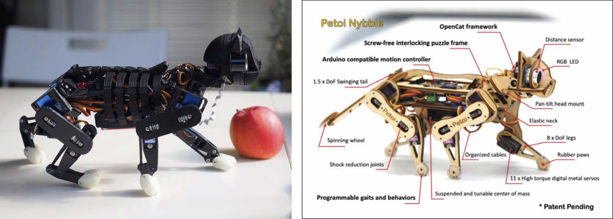

Research on Artificial Creatures
First and foremost, there are various aspects to consider when finding one that is enthralling. For starts, these are examples that I find have an entrancing movement. They are the
snakebot from Howie Choset and Matt Travers as well as animatronic
Avatar' shaman from Walt Disney Imagineering.
Below are extracted clips displaying their spellbinding motion.
Subsequently, these are those that are made to look and move similarly to how human beings or animals would. Prime examples of this is the Atlas and ASIMO. Whilst Atlas is tested outside on loose rock, ice, and so on, Aismo is always in a controlled setting. However, ASIMO appears to be smarter. With animal-like robotics, I am fond of Rongzhong Li's OpenCat even though it is still in its early stages.
Petoi, a company he founded, aims to design pets for the future. They claim that their friendly pet robots are educational, programable, engaging, and most of all, cute! In my opinion, this is the vision for what would eventually be the ideal companion cats (and maybe even other pets).

— ★ —
Thus far, it is mainly about the realism of its movements or its capabilities with motion. As for interesting developments involving interaction between human beings and machines, I would look at
Nadine or
Sophia as they are able to have actual conversations. Nadine is autonomous and can have bounded conversation on its own. She is able to memorize conversations that you had together and use that in context the next time you talk to her. In context, she is also able to express emotion if spoken to rudely. As of now, she could possibly take over receptionists' jobs or aid the elderly and disabled. On the other hand, Sophia is still fairly rudimentary in her ability to think and reason. Her speech and comprehension is powered by Google's singularitynet programme. Despite this, most of her responses have been scripted or generated by a decision tree. At the moment, Sophia is basically a chatbot with a face. All in all, these social robots utilise a perception-decision-action architecture.
Shown above are another two notable mentions for its concepts are the roomba that screams, making it more human, and tiny drones that recognize hand gestures, giving an illusion of ownership and security. The reasoning behind them is intriguing — how Michael Reeves found it uncharacteristic that a roomba does not react when it bumps into things and how the talkshow host compares it to a human stubbing our toe. The creator of the tiny drones, Marco Tempest, mentions that they know where he is and can follow him around. He does not specifically states it, but it seems like they not only respond to gestures but also audio. Plus, upon further research, Tempest is in the field of magic and I am amused. After looking around, I think that each of the aforementioned (except the roomba that screams) has, to an extent, some value currently but its definitive value can still either soar or depreciate in its respective fields over time based on what society attributes to it.
CLOSE RESEARCH